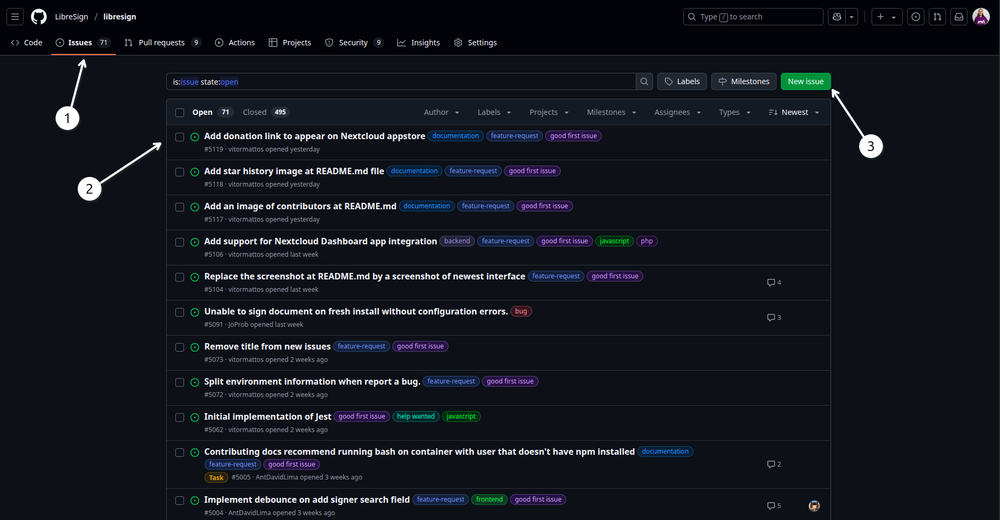
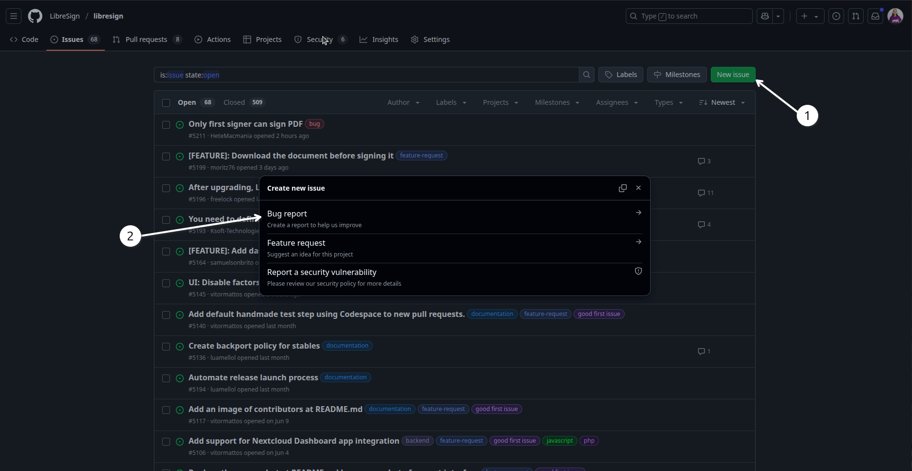
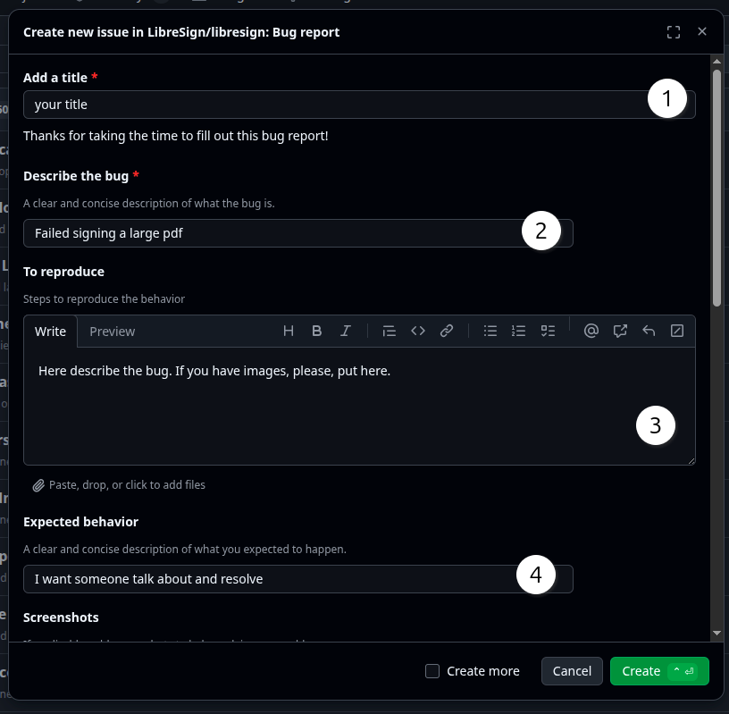
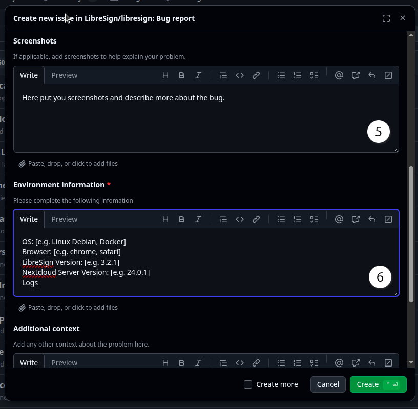
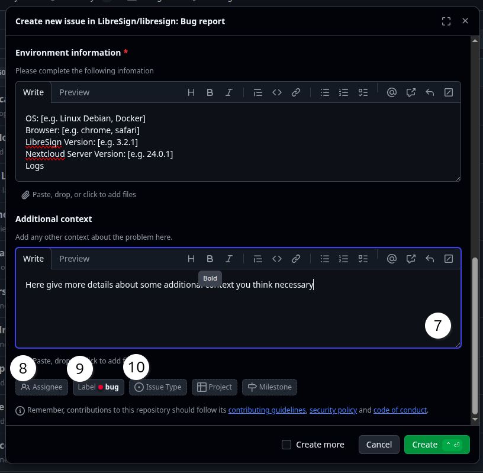

Reporting bugs in LibreSign is essential for maintaining the quality and reliability of the application. If you encounter a bug, please follow these steps to report it effectively:
1 - Access the LibreSign repository at LibreSign
2 - Go to the “Issues” tab.

1 - Issue tab
2 - Look and search for existing issues
3 - Create a new issue, here you can report a bug
3 - Click on the “New issue” button

1 - New issue button
2 - Choose “Bug report” as the issue type
3.1 - Now you can fill in the details of your bug report

1 - Title of the bug report
2 - If you have some problem with the bug, you can add a label to the issue
3 - Description of the bug, including any relevant details or steps to reproduce
4 - Write want you expected to happen
3.1.1 - Continue to fill the form with the necessary information

5 - Here you put screenshots or any other relevant files that can help in understanding the bug
6 - Here you give more details about environment where the bug was found, such as operating system, browser, etc.
3.1.2 - Continue to fill the form with the necessary information

7 - Here you write the additional information about the bug.
8 - Add yourself as the author of the bug report.
9 - If need to choose a bug label, you can do it here.